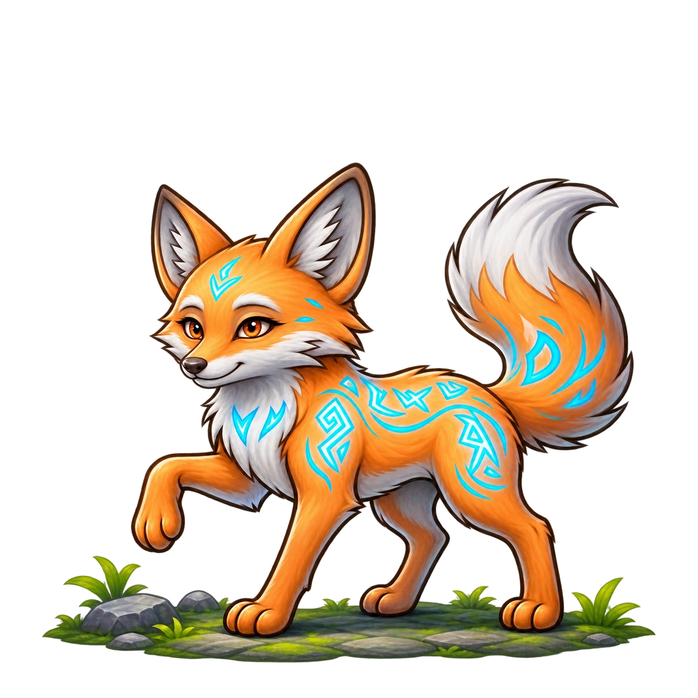

VÝTVARNÉ NÁVRHY · V4
Liška roste
Schválený základ
Společná cesta ↗
Stejná liška. Bohatší srst, výraznější runy a pokaždé jiný postoj.
Světlé pozadí
1 · schválený základ
2–5 · nové návrhy
Kliknutím zvětšíš
Vedle sebe
Zavřít ×
ZÁKLAD
Základní

NÁVRH
PNG ↗
←
→